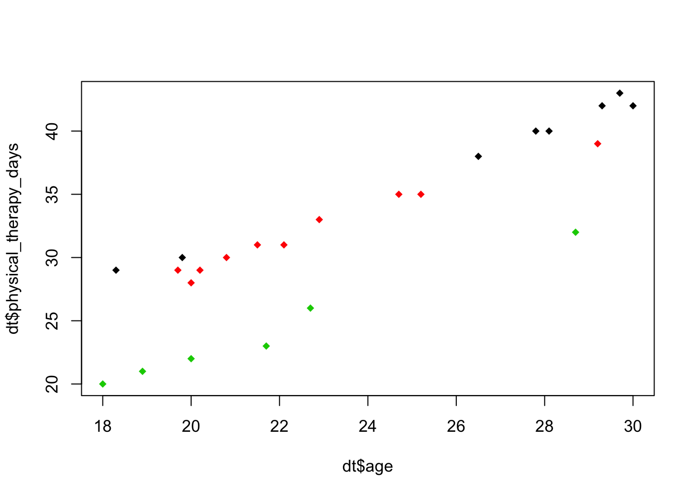
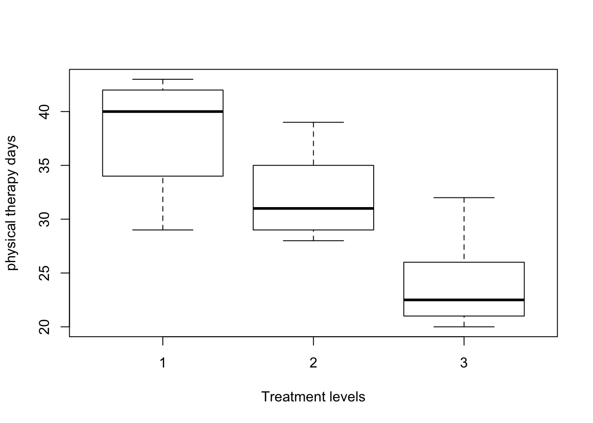

library(plyr)
library(asbio)dt <- read.table("./data/CH22PR11.txt",
col.names = c("physical_therapy_days", "fitness_status", "obs", "age"))
dt$fitness_status = as.factor(dt$fitness_status)
dt$obs = as.factor(dt$obs)fit = aov(physical_therapy_days~age+fitness_status, dt)
shapiro.test(fit$residuals)##
## Shapiro-Wilk normality test
##
## data: fit$residuals
## W = 0.98277, p-value = 0.9409fit.interaction = aov(physical_therapy_days~age+fitness_status+age:fitness_status, dt)
summary(fit.interaction)## Df Sum Sq Mean Sq F value Pr(>F)
## age 1 835.8 835.8 2530.910 < 2e-16 ***
## fitness_status 2 246.1 123.0 372.609 2.26e-15 ***
## age:fitness_status 2 0.2 0.1 0.336 0.719
## Residuals 18 5.9 0.3
## ---
## Signif. codes: 0 '***' 0.001 '**' 0.01 '*' 0.05 '.' 0.1 ' ' 1variance_table = summary(fit.interaction)[[1]]
variance_table[3,,drop=F]## Df Sum Sq Mean Sq F value Pr(>F)
## age:fitness_status 2 0.22184 0.11092 0.3359 0.7191plot(dt$physical_therapy_days~dt$age, col=dt$fitness_status, pch=18)
cortest = cor.test(dt$physical_therapy_days,dt$age)
cortest##
## Pearson's product-moment correlation
##
## data: dt$physical_therapy_days and dt$age
## t = 8.5376, df = 22, p-value = 1.972e-08
## alternative hypothesis: true correlation is not equal to 0
## 95 percent confidence interval:
## 0.7317657 0.9455402
## sample estimates:
## cor
## 0.8764434cortest$estimate## cor
## 0.8764434cortest$p.value## [1] 1.972299e-08fit.treatment = aov(physical_therapy_days~age+fitness_status, dt)
variance_table = summary(fit.treatment)[[1]]
variance_table## Df Sum Sq Mean Sq F value Pr(>F)
## age 1 835.75 835.75 2710.95 < 2.2e-16 ***
## fitness_status 2 246.08 123.04 399.11 < 2.2e-16 ***
## Residuals 20 6.17 0.31
## ---
## Signif. codes: 0 '***' 0.001 '**' 0.01 '*' 0.05 '.' 0.1 ' ' 1variance_table[2,,drop=F]## Df Sum Sq Mean Sq F value Pr(>F)
## fitness_status 2 246.08 123.04 399.11 < 2.2e-16 ***
## ---
## Signif. codes: 0 '***' 0.001 '**' 0.01 '*' 0.05 '.' 0.1 ' ' 1fit.tukey = aov(physical_therapy_days~fitness_status, dt)
TukeyHSD(fit.tukey, conf.level = 0.95)## Tukey multiple comparisons of means
## 95% family-wise confidence level
##
## Fit: aov(formula = physical_therapy_days ~ fitness_status, data = dt)
##
## $fitness_status
## diff lwr upr p adj
## 2-1 -6 -11.32141 -0.6785856 0.0253639
## 3-1 -14 -20.05870 -7.9413032 0.0000254
## 3-2 -8 -13.79322 -2.2067778 0.0060547boxplot(physical_therapy_days ~ fitness_status, dt, xlab="Treatment levels",
ylab = "physical therapy days")